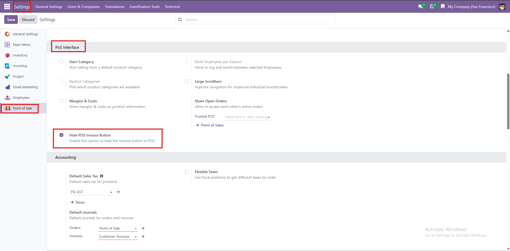
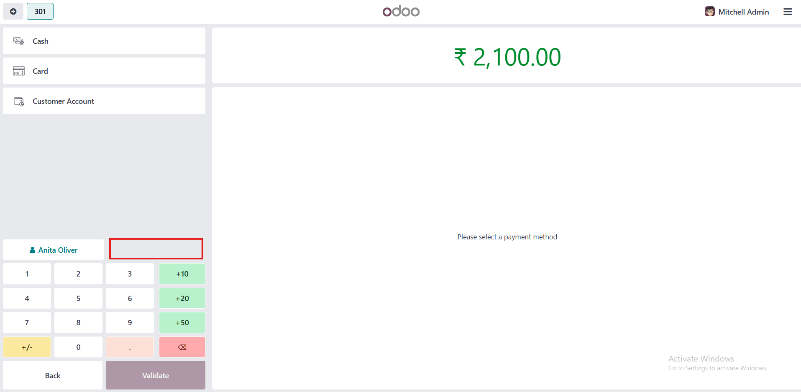
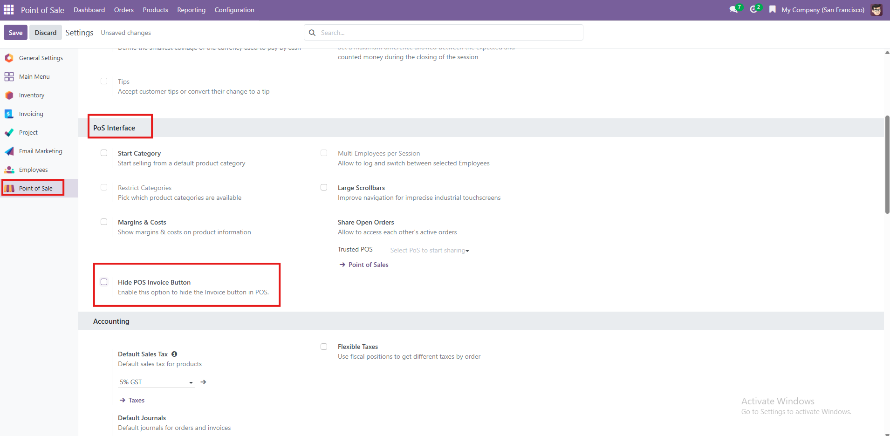
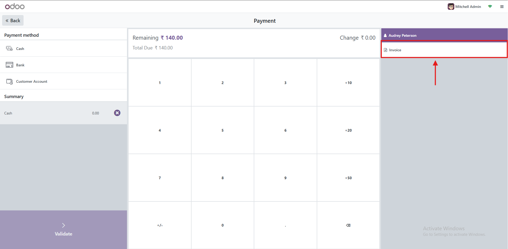

POS Invoice Button Toggle
Invoice Button Toggle improves productivity by letting you Easily control the visibility
of the Invoice button in POS. With this module, you can hide or show the button directly from POS configuration settings.
Key Features
- Add a simple checkbox in POS settings.
- Enable checkbox → "Hide POS Invoice Button" to hide the pos button from pos payment screen.
- Disable checkbox → "Hide POS Invoice Button" to see the invoice button as it is
- No code changes, fully configurable from backend.
Usage Guide
- Go to Point of Sale → Configuration → POS Settings
- Locate the option “Hide POS Invoice Button” in the PoS Interface.
- ✅ Checked → Invoice button will be hidden on the Payment Screen.
❌ Unchecked → Invoice button will be visible as usual.
- Save settings and start a POS session to see the change.
Screenshots
1. Setting in the PoS Interface

2. Checked → Invoice button will be hidden on the Payment Screen.

3. Unchecked → Invoice button

4. Invoice button has displaying as it is
